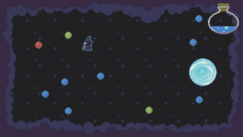
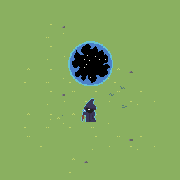
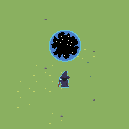

Manascape
Unity 3DC#GitHub
Overview
Game submission for GameMaker's Toolkit Game Jam 2022. For 3 days, I Collaborated with a friend in developing Manascape(Mana + Escape) using Unity. I programmed the core gameplay in C# while using Git and GitHub for version control. I wrote the code for (1)player movement, (2)item behavior, (3)mana spawning system, (4)zone portal system, and (5)scene management.The player movement script uses Rigidbody 2D physics and the new Unity Input system where the player would provide a vector value, via key press, which is then used to calculate a desired velocity which in turn moves the player sprite with a given speed and acceleration. The slippery movement is in effect when the player provides a different vector value; the current velocity would then change/lerp to the newly calculated velocity.

Mana points and health potions have 2D collider components that are used in collision detections with the player, where object-specific methods are triggered using the built in "OnTriggerEnter2D" methods. Colliding with mana points increases the number of mana the player has by 1 and colliding with health potions increases the player's health up 1. In addition, if the player collects enough mana points, they can an "exit" portal object via another key press which upon entering/colliding will take the player to victory screen and, in turn, beat the game.
Each area within the game has a set amount of mana that can be collected as well as a "normal" portal that spawns after a given amount of time has passed. Mana are separated into 3 different types, valuing at 1 point, 5 points, and 10 points respectively. The mana spawning system is given a hard-coded mana progression chart that details the combined total amount of mana that should spawn within each zone. The system will break down the total number into appropriate sums using the different mana values (ie 18 total mana = 5 + 5 + 5 + 1 + 1 + 1) with the goal of having a balanced amount of mana objects to spawn. Once the mana values are decided, the system will proceed to institate them individually with a set amount of time in between.
The zones themselves have a timer where the walls of the screen begin to close in towards the center. If the timer would reach 0 then the zone would collapse and the player would be trapped in the zone forever and lose the game. "Normal" portals are set to spawn a few seconds before the zone collapses; entering the "normal" portals is the only way to move onto the next zone where the player can collect more mana points, including high value mana, with the added risk of encountering enemies. If enough mana points are acquired, the player can create an "exit" portal via "SpaceBar" keypress and escape; thus beating the game.
The scene management system features a single persistent scene and a single scene that will change throughout the game. Portals will take players to new zones, but in reality the scene is simply resetting with new amounts of items and enemies to spawn. There is one exception where if the player enters the portal at a certain time, they will enter a wild zone which is a separate scene entirely that has higher amounts of enemies and items to spawn. There are 6 unique scenes in the Unity build:
Each area within the game has a set amount of mana that can be collected as well as a "normal" portal that spawns after a given amount of time has passed. Mana are separated into 3 different types, valuing at 1 point, 5 points, and 10 points respectively. The mana spawning system is given a hard-coded mana progression chart that details the combined total amount of mana that should spawn within each zone. The system will break down the total number into appropriate sums using the different mana values (ie 18 total mana = 5 + 5 + 5 + 1 + 1 + 1) with the goal of having a balanced amount of mana objects to spawn. Once the mana values are decided, the system will proceed to institate them individually with a set amount of time in between.
The zones themselves have a timer where the walls of the screen begin to close in towards the center. If the timer would reach 0 then the zone would collapse and the player would be trapped in the zone forever and lose the game. "Normal" portals are set to spawn a few seconds before the zone collapses; entering the "normal" portals is the only way to move onto the next zone where the player can collect more mana points, including high value mana, with the added risk of encountering enemies. If enough mana points are acquired, the player can create an "exit" portal via "SpaceBar" keypress and escape; thus beating the game.
The scene management system features a single persistent scene and a single scene that will change throughout the game. Portals will take players to new zones, but in reality the scene is simply resetting with new amounts of items and enemies to spawn. There is one exception where if the player enters the portal at a certain time, they will enter a wild zone which is a separate scene entirely that has higher amounts of enemies and items to spawn. There are 6 unique scenes in the Unity build:
- A persistent scene that houses the game systems and managers that maintains and supports the game flow; this scene remains loaded at all times
- A start scene that contains the main menu
- A normal zone scene that is reused to simulate different zone levels by spawning different amounts of enemies and items per zone/level
- A wild zone scene where higher amounts of enemies and items spawn
- A win scene for when the player wins
- A lose scene for when the player loses


